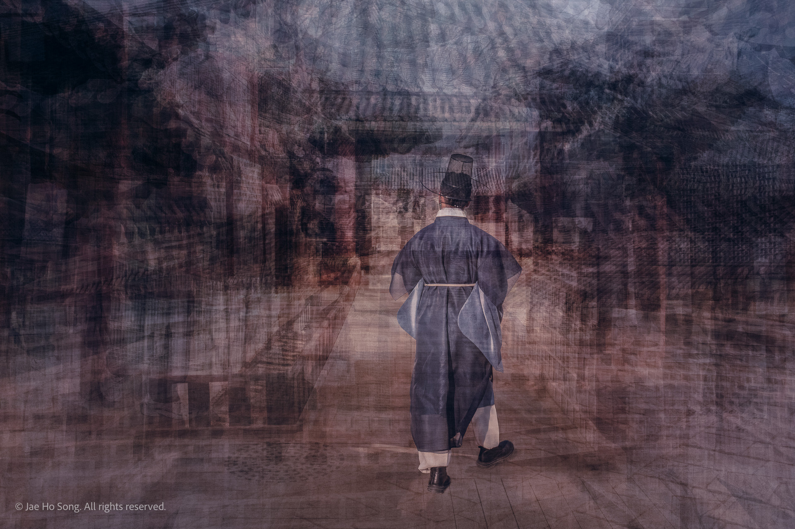
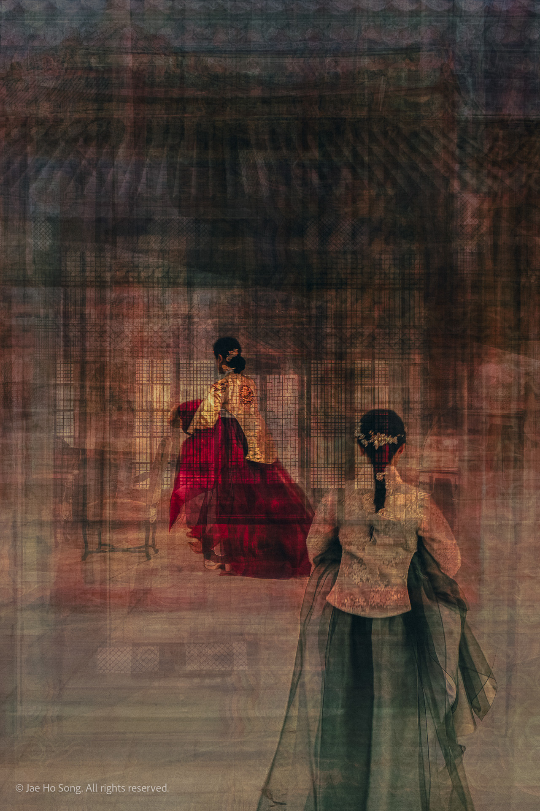
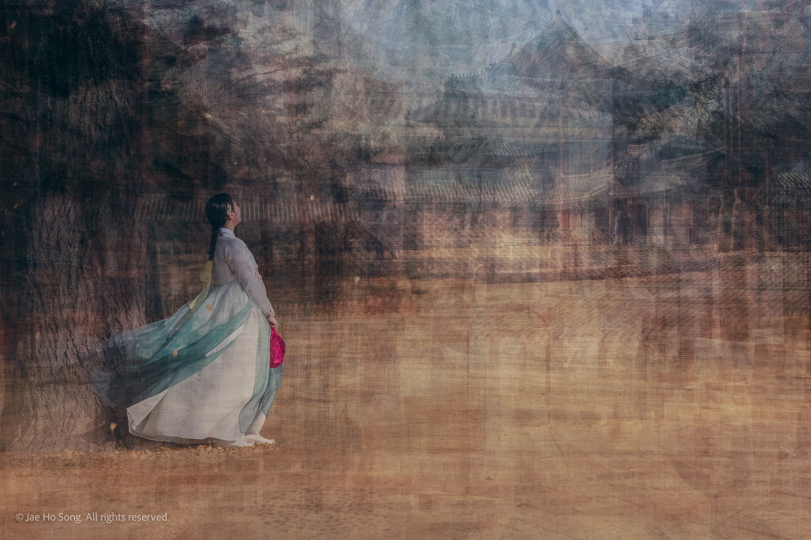

Digital Art/ Gung 2023 Large view Grid view Gung: No. 01 - Contemplation, 2023  Gung: No.2 - Recollection, 2023  Gung: No. 3 - Resonance, 2023  Gung: No. 4 - Glow, 2023 Gung: No. 01 - Contemplation, 2023 Gung: No.2 - Recollection, 2023 Gung: No. 3 - Resonance, 2023 Gung: No. 4 - Glow, 2023 Next series → Monolith ›Next seriesMonolith